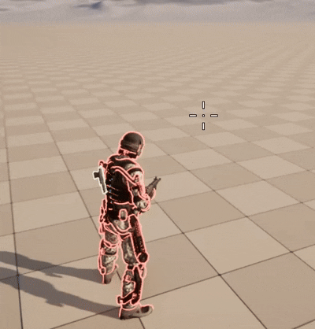
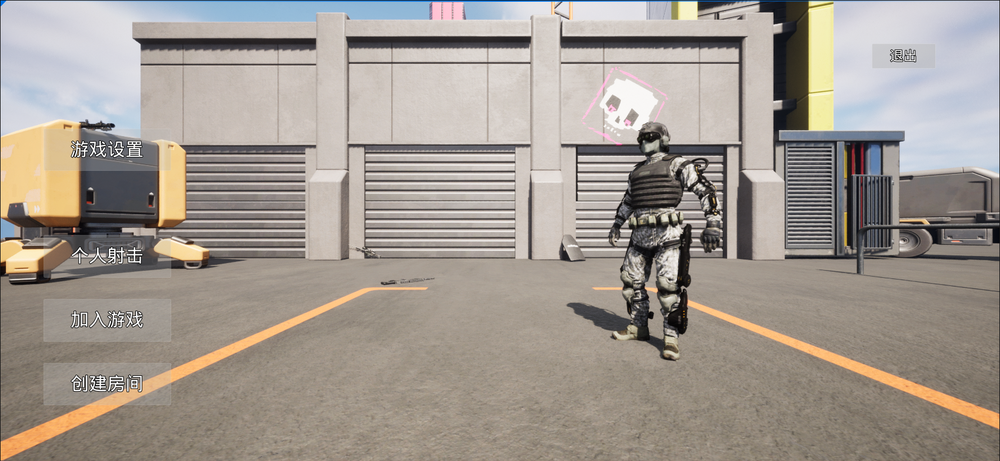
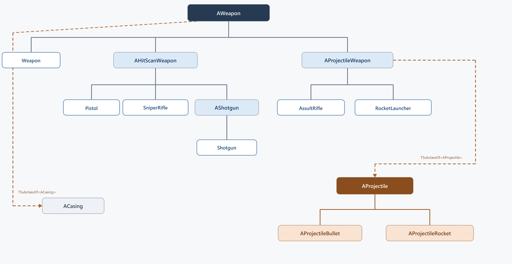
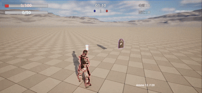
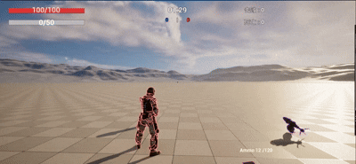
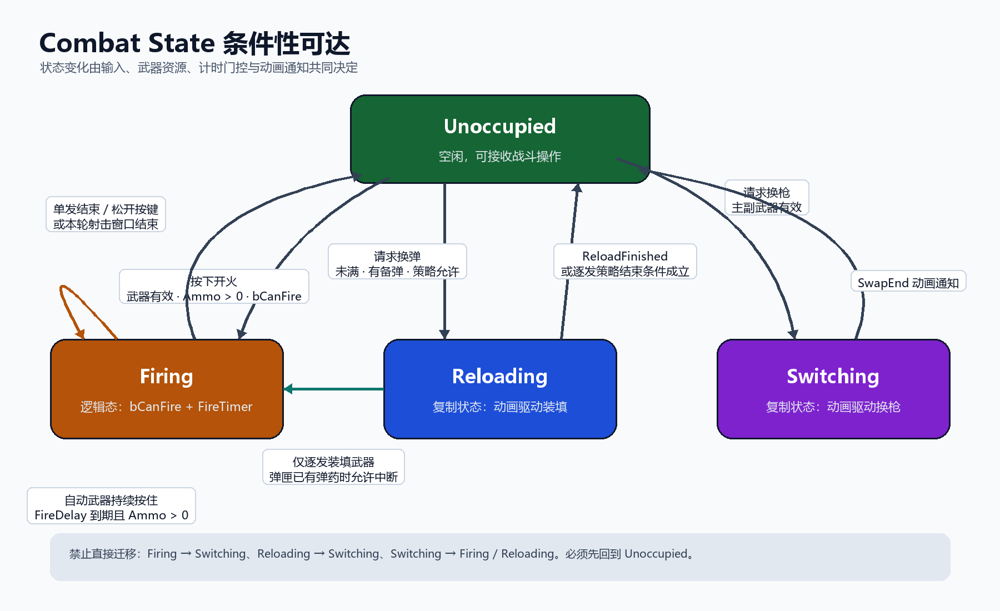
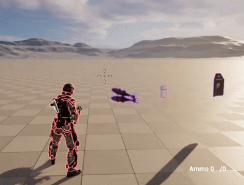
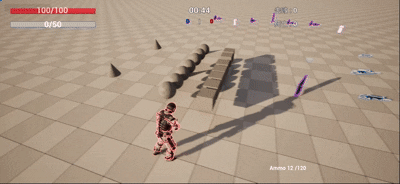

MULTIPLAYERSHOOTINGPROJECT
基于 Unreal Engine 5.4 与 C++ 实现第三人称网络射击：服务器通过 Server RPC 维护权威战斗状态，客户端负责本地瞄准、预测动画与 HUD 表现，Replication 同步关键数据，Server-Side Rewind 处理高延迟下的命中确认。

核心系统
CombatComponent 与 AnimInstance 处理战斗和动画，GameMode、PlayerController 与 Replication 维护服务器权威状态，GameplayTag、Manifest、FastArray 和 Grid 构成数据驱动背包。
准心敌友识别
ECC_Visibility、接口队伍查询、PlayerState 复制与 CrosshairSpread。
Character / AnimInstance瞄准偏移与原地转身
AO_Yaw、Rotate Root Bone、双阈值状态与 FInterpTo。
WeaponState / FABRIK武器附加与左手校正
OwnerOnly、服务器装备、Socket 骨骼空间与 FABRIK。
UMG / OnlineSubsystemSteam主菜单与 Steam Session
GameInstanceSubsystem、异步 Delegate、MatchType 与 Travel。
AWeapon / Data Driven武器分类与数据
机制继承、武器身份、弹体关联与弹药职责。
MatchState / Time Sync比赛状态与时间同步
服务器时间轴、样本过滤、单程延迟与本地倒计时。
Replication / Buff生命护盾与恢复 Buff
复合状态、OnRep、服务器恢复与按需 Tick。
Game Rules / Respawn淘汰计分与复活
GameMode 结算、GameState 得分、Multicast 与新 Pawn。
Strategy / CombatState换弹策略与状态机
Server RPC、AnimNotify、装填策略与弹药 HUD 链路。
Prediction / Fire Loop射击链路与输入手感
枪口方向、本地预测、多播去重与连续开火。
HitBox / SSR命中确认与服务器回溯
历史 HitBox、环形缓冲、时间校准与权威伤害确认。
Pickup / Authority拾取物刷新与消费
服务器 Overlap、生命周期、一次性保护与循环生成。
Manifest / FragmentManifest 与 Fragment
GameplayTag、TInstancedStruct、序列化与数据组合。
FastArray / DeltaFastArray 增量复制
稳定 ID、Dirty 标记、增量回调与子对象复制。
2D Grid / Placement空间查询与物品落位
二维边界、候选占用、堆叠填充与 Grid Widget。
HoverItem / Interaction背包物品交互
区域检测、放置合并、连续交换与服务器丢弃。

准心敌友识别
本地客户端持续把屏幕中心转换为世界射线：命中敌方角色身体时准心变红，友方、场景物体或未命中时保持白色。同一份射线结果生成武器使用的 HitTarget，确保 HUD 反馈与射击方向来自相同的瞄准数据。
- 01检测只在本地控制角色上运行，不为准心颜色与扩散反馈发送额外 RPC。
- 02射线使用
ECC_Visibility；Capsule Ignore、Skeletal Mesh Block，因此只有实际命中角色身体才会变色。 - 03
ECC_SkeletalMesh与准心检测无关，检测精度来自组件对 Visibility 的差异化 Collision Response。 - 04通过
IInteractWithCrosshairsInterface获取目标队伍，CombatComponent 不依赖具体角色类型；队伍数据读取自已复制的PlayerState。 - 05水平速度、腾空、ADS 和开火共同合成
CrosshairSpread，颜色与扩散参数统一写入 FHUDPackage。

瞄准偏移与原地转身
角色静止腰射时，上半身先通过 Aim Offset 跟随准心，脚部保持原方向；水平偏移超过阈值后播放左转或右转动画，并逐渐释放 Root Bone 补偿，使 Mesh 平滑追上 Actor 的真实朝向。
- 01
AO_Yaw来自当前 Aim Rotation 与静止起始方向之间的水平差值，只在静止、未腾空且未 ADS 时累计。 - 02
NormalizedDeltaRotator将 Yaw 规范到 −180°～180°，跨越角度边界时仍按最短方向计算。 - 03
Rotate Root Bone只在 Animation Pose 中抵消 Actor 旋转，不修改 Capsule、控制器、服务器朝向或武器射线。 - 04偏移超过 ±90°进入转身并通过
FInterpTo回收到 0；开始修正时不修改 StartingAimRotation，低于 15°后才重建基准。 - 05ADS 停止累计水平偏移以稳定枪械与镜头，AO_Pitch 继续更新，并把远端的 270°～360°映射回负角度。
武器附加与左手校正
地面武器通过 Overlap 建立可拾取目标，客户端操作只发送装备请求，由服务器决定武器归属与主副槽位。主武器固定在人物右手，Weapon Asset 再反向定义左手握点，使相同 Character Skeleton 适配不同枪械。
- 01AreaSphere 检测 Pawn，
OverlappingWeapon使用COND_OwnerOnly，拾取提示只复制给 Character Owner。 - 02客户端通过 Server RPC 表达装备意图，服务器依据权威 Overlap 结果与 CombatState 决定归属和槽位。
- 03WeaponState 统一切换拾取碰撞、Physics Simulation 和 Custom Depth；主武器附加到
RightHandSocket，副武器附加到 BackpackSocket。 - 04每把武器通过
LeftHandSocket配置握点，Transform 转到 RightHand Bone Space 后由FABRIK求解左臂。 - 05Reloading 时关闭 FABRIK 让 Montage 接管左手；多武器 Overlap 使用候选集合并按准心方向与距离稳定选择 FocusedWeapon。

主菜单与 Steam Session
UMG 蓝图负责设置和菜单表现，C++ UMenu 将 Host、Join 与模式选择转交给 UMultiplayerSessionsSubsystem。Subsystem 跨地图维护 Online Session 生命周期，通过异步委托连接 Steam Lobby、监听大厅和比赛地图。
- 01蓝图只处理窗口模式、分辨率、画质和 VSync；在线流程集中在 C++，避免界面逻辑持有 Steam API 细节。
- 02
UMultiplayerSessionsSubsystem基于 GameInstanceSubsystem，跨 Level Travel 保留 Session 状态和委托绑定。 - 03创建、搜索、加入和销毁通过两层 Delegate 回传结果；已存在 Session 时先销毁，再继续挂起的创建请求。
- 04自定义
MatchType写入 Session Settings，Join 时在搜索结果中筛选相同模式，显示名称与网络键分离。 - 05Host 使用 Listen Server 与 ServerTravel，Join 解析 ConnectString 后执行
ClientTravel；大厅满足人数后 Seamless Travel 到模式地图。

武器分类与数据
少量 C++ 机制类通过资产配置覆盖六种武器：AWeapon 保存公共规格，AHitScanWeapon 与 AProjectileWeapon 区分命中机制，AShotgun 扩展多射线逻辑；武器身份、开火机制和生命周期状态分别建模。
- 01
AWeapon统一 Mesh、碰撞、弹药、射速、散布和表现资源，具体资产不必为每种枪新增 C++ 子类。 - 02
EWeaponType表达手枪、步枪等武器身份并索引携带弹药；EFireType独立表达 HitScan、Projectile 或 Shotgun 机制。 - 03
AHitScanWeapon承担射线类公共行为，AShotgun仅扩展一次生成多条散布射线的差异。 - 04
AProjectileWeapon通过 TSubclassOf 关联AProjectile，弹体再派生为 AProjectileBullet 与 AProjectileRocket，二者不是武器继承链。 - 05弹匣 Ammo 属于武器 Actor，携带弹药按 EWeaponType 保存在 CombatComponent；ACasing 只承担弹壳物理与销毁。
比赛状态与时间同步
服务器推进 WaitingToStart、InProgress 和 Cooldown，客户端只接收状态与时间基准，并通过多次请求/响应估算服务器时钟。HUD 在本地根据校准后的服务器时间计算倒计时，不需要服务器每秒复制剩余秒数。
- 01GameMode 只存在于服务器，PlayerController 将 MatchState 和整条比赛时间轴送到对应客户端。
- 02中途加入通过 ServerCheckMatchState 补齐当前阶段、LevelStartingTime、WarmupTime、MatchTime 与 CooldownTime。
- 03每次采样由请求发送时刻和回复抵达时刻得到 RTT，再估算
SingleTripTime与ClientServerDelta。 - 04滑动窗口拒绝异常 RTT，对保留样本平均，
GetServerTime()使用平均时钟偏差减少倒计时与回溯时间抖动。 - 05自测单程延迟服务于时钟校准；PlayerState 压缩 Ping 服务于高延迟提示，两者数据源和用途分离。

生命护盾与恢复 Buff
服务器在一次结算中按“护盾优先、溢出扣生命”更新复合状态，再复制 FReplicatedVitalState。客户端的 OnRep 只刷新 HUD 和受击表现；持续恢复由服务器 UBuffComponent 校验参数并按需启停 Tick。
- 01生命和护盾只由服务器修改，客户端即使篡改本地数值也不能影响权威比赛结果。
- 02
FReplicatedVitalState将 Health 与 Shield 作为同一次网络更新复制，避免两个 OnRep 跨帧产生中间状态。 - 03旧值随
OnRep进入客户端，HUD 刷新与受击 Montage 共用变化判断，避免监听服务器或重复复制造成反馈叠加。 - 04
UBuffComponent对恢复量、持续时间和速率做有限值与正数校验；生命和护盾达到上限后仍按既定规则消耗剩余恢复量。 - 05只有存在有效 Buff 时调用
SetComponentTickEnabled(true)，全部恢复任务结束后停止 Tick，降低常驻组件开销。

淘汰计分与复活
生命归零后由服务器 ABlasterGameMode 统一结算攻击者得分、受害者失败次数和团队分数，再可靠多播死亡表现。延迟结束后 RequestRespawn 销毁旧 Pawn，并让原 Controller 在出生点控制新角色。
- 01GameMode 负责规则；
PlayerState保存个人得分和失败次数；GameState维护最高分玩家与团队总分。 - 02攻击者得分变化触发 Owner HUD 与得分音效，全体 PlayerController 接收淘汰公告，规则数据和表现事件分离。
- 03可靠 Multicast 统一关闭移动、输入和碰撞，处理武器生命周期并播放 Dissolve/Elim 表现。
- 04
RequestRespawn仅在服务器执行：销毁旧 Character，选择 PlayerStart，再用原 Controller 创建并 Possess 新 Pawn。 - 05Controller 与 PlayerState 跨复活保留；默认武器由服务器为新角色生成、设为独立销毁生命周期并完成装备复制。

换弹 Strategy 与状态机
客户端通过 ServerReload 请求进入 Reloading，服务器复制 CombatState 并播放对应 Montage。弹药不在按键时修改，而由 AnimNotify 在真实装填帧反向提交；装填 Strategy 决定一次性、逐发或持续充能规则。
- 01服务器验证武器、弹匣和备弹条件后复制 Reloading，
CombatState阻止换弹、射击和 Switching 非法并发。 - 02装填 Strategy 管理一次性装填、逐发装填并预留持续充能；动画 Strategy 按 WeaponType 选择 Montage 和 Section。
- 03
AnimNotify从动画反向调用 FinishReloading 或单发 ShellReload，在动作到达装填点时才让服务器提交资源变化。 - 04
AmountToReload取弹匣空位与对应携带弹药的较小值；服务器扣备弹、调用 AddAmmo，再通过复制和客户端 RPC 更新两组 HUD。 - 05霰弹枪每次通知只装一发，弹匣满或备弹为零时跳转结束段；Switching 同样由状态和动画通知控制挂点切换。
射击链路与输入手感
本地客户端先从屏幕中心计算 HitTarget，再由枪口指向该点得到实际射击角度。按键后立即执行预测表现，同时发送 ServerFire；服务器校验并 MulticastFire 给其他客户端，最初射手跳过重复动画。
- 01摄像机负责选点，MuzzleFlash Socket 到目标的向量负责枪口旋转；散布只改变最终目标，不改变输入采样方式。
- 02本地预测立即播放 Character Montage、Weapon Animation、弹壳和准心冲量，消除等待 Server RPC 的输入延迟。
- 03
ServerFire校验射速窗口后调用MulticastFire，本地控制客户端识别已预测事件并主动跳过。 - 04
bCanFire与FireDelayTimer 同时限制本地射速和自动武器循环，避免按键频率直接决定射速。 - 05持续保存按住开火的输入意图：换弹结束立即尝试射击，弹匣耗尽则自动请求换弹，使状态切换保持连续。
从输入采样到可预测的网络射击循环
系统把目标点计算、实际枪口方向、本地表现、服务器授权和射速循环拆成独立阶段，使输入反馈不必等待网络往返，同时保留服务器统一分发射击事件的能力。
准心选点：只由本地玩家构造 HitTarget
CombatComponent 只为 IsLocallyControlled() 的角色执行准心检测。系统取得视口中心，通过 DeprojectScreenToWorld 得到世界起点与方向；远端角色不在每台机器上重复计算同一条准心射线。
DistanceToCharacter + 100.f，减少首先命中自己角色的概率。Screen Center→DeprojectScreenToWorld→Start + Direction × TRACE_LENGTH枪口方向：摄像机决定目标，MuzzleFlash 决定发射角
准心射线先回答玩家希望命中的世界位置，武器再从 MuzzleFlash Socket 指向 HitTarget，通过 (HitTarget - MuzzleLocation).Rotation() 得到实际射击角度。这样既保留第三人称准心体验，也确保弹体从枪口而不是摄像机生成。
本地预测：即时表现与服务器多播互不重复
通过 CanFire 后，开火客户端立即调用 LocalFire，同步播放角色 Montage、武器动画、弹壳、准心扩散脉冲并预测扣除弹药；同一输入同时调用 ServerFire，由服务器校验射速参数和战斗状态后执行 MulticastFire。
Input→LocalFire + ServerFire→MulticastFire→Remote LocalFireOnRep_Ammo 使用绝对值完成最终校正。连续开火：射速门控与跨状态输入意图
每次成功射击立即令 bCanFire = false，并以 Weapon::FireDelay 启动计时器。FireTimerFinished 恢复门控后，只有按键仍被保持、武器允许 Automatic 且 CombatState 可开火时才进入下一轮，射速因此不依赖帧率或输入事件频率。
命中确认与服务器回溯
客户端立即预测候选命中，并将轨迹与画面对应的服务器时间提交给服务器。服务器从固定容量环形缓冲区恢复目标骨骼 HitBox，在独立 ECC_HitBox 通道上重放射线或弹道，确认后才调用 ApplyDamage()。
- 01主要骨骼配置固定 BoxComponent，只在回溯阶段启用
ECC_HitBox，与角色胶囊和普通 Mesh 碰撞隔离。 - 02历史帧只在服务器 Tick；环形缓冲区复用固定内存，固定 HitBox 数组避免 TMap/链表分配，并且不重复保存 BoxExtent。
- 03客户端使用过滤后的服务器时间和平均 SingleTripTime 计算 HitTime，降低瞬时 RTT 抖动对历史帧选择的影响。
- 04HitScan 通过
ServerScoreRequest提交 TraceStart、HitTarget 和目标；Projectile 提交 InitialVelocity 让服务器重建历史弹道。 - 05服务器先检查头部 HitBox，再检查身体 HitBox，恢复目标当前姿态和碰撞设置后，以权威 Controller 调用
ApplyDamage()。
从客户端画面时间回到服务器历史姿态
回溯不是用 RPC 抵达服务器的时刻检测当前角色，而是重建玩家开火画面对应的历史世界，再由服务器重新确认命中。
时间同步：先确定“应该检查哪一帧”
客户端记录请求发送时间 T0，服务器返回处理时刻 Ts，客户端在 T1 收到响应。由 RTT = T1 - T0 得到单程时延估计，再计算服务器时间偏移；开火请求最终携带 HitTime = GetServerTime() - SingleTripTime。
RTTᵢ = T1ᵢ − T0ᵢ→OneWayᵢ = RTTᵢ / 2→ServerDeltaᵢ = Tsᵢ + OneWayᵢ − T1ᵢ历史帧：环形缓冲区 + 固定 HitBox 数组
角色的 16 个语义 HitBox 以固定索引保存头、躯干、四肢的位置与旋转。历史帧使用预分配环形缓冲区：新帧直接写入 Frames[WriteIndex]，索引取模前进，容量满后覆盖最旧帧，因此插入与淘汰均为 O(1)。
ECC_HitBox，普通 Capsule 与 SkeletalMesh 不参与确认，避免动画碰撞与角色移动碰撞干扰结果。检索与插值：在两个服务器快照之间恢复姿态
HitTime 早于最旧历史帧时直接拒绝，晚于最新帧时使用最新数据，命中精确时间戳时直接返回对应帧；位于 Older 与 Younger 之间时，按逻辑时间顺序执行二分查找，再对每个 HitBox 的位置与旋转做插值。
Fraction = Clamp((HitTime - Older.Time) / (Younger.Time - Older.Time), 0, 1)环形缓冲区的物理下标会回绕，但通过“最旧帧 + 逻辑偏移”映射到实际槽位，仍可保持单调时间序列并进行二分查找，避免从最新帧逐节点扫描。
服务器确认：同一套历史姿态，两种轨迹重放
服务器先缓存目标当前 HitBox 与 Mesh 碰撞状态，再把所有 Box 移动到历史帧。头部单独启用并执行第一次检测；未命中时再启用全身 Box。确认完成后无论结果如何都恢复当前姿态和碰撞，只有有效结果才以服务器权威 Controller 调用 ApplyDamage()。
LineTraceSingleByChannel 重放瞬时射线PredictProjectilePath 重建带半径和模拟频率的历史弹道FVector_NetQuantize 压缩起点与目标FVector_NetQuantize100 压缩初速度
拾取物刷新与消费
场景 Pickup 由服务器生成并绑定 Overlap，客户端只显示复制 Actor 的旋转、描边、音效和粒子。明确的 Inactive → Active → Consumed 状态保证生成保护期和可拾取阶段分离，消费前先占用以阻止同帧重复触发。
- 01碰撞重叠只在 Authority 绑定，客户端不能通过本地 Overlap 直接增加弹药、生命或护盾。
- 02
APickupSpawnPoint在服务器随机选择 PickupClass，并在当前 Pickup 销毁后启动下一轮随机刷新计时。 - 03
Inactive阶段关闭有效消费，Active 才开放 Sphere Overlap；Consumed 立即关闭碰撞和表现，生命周期可读且可验证。 - 04回调首先检查并设置
bConsumed，再应用派生效果，避免多个 Pawn 在同一帧消费同一 Actor。 - 05服务器 Destroy 自动同步客户端并通知 SpawnPoint；资源满值仍消耗 Pickup 的玩法规则与派生数值效果保持分离。
Manifest 与 Fragment
同一个 AItem 通过 GameplayTag 标识物品身份，FInvItemManifest 聚合尺寸、图标、堆叠、文本和行为 Fragment。TInstancedStruct<FInvFragment> 在值语义数组中保存不同派生 USTRUCT，并保留类型信息与序列化能力。
- 01ItemType GameplayTag 表达物品身份，FragmentTag 表达数据语义；类型和能力标签彼此独立。
- 02
FInvItemManifest是完整物品清单，场景 ItemComponent、运行时 UInvItem、描述 UI 和丢弃重建共享同一来源。 - 03
TInstancedStruct<FInvFragment>解决 TArray 基类值切片和裸指针所有权问题，支持异构派生 USTRUCT 的值语义存储。 - 04InstancedStruct 保存实际 ScriptStruct 类型和内存，参与 UPROPERTY、Archive 与网络序列化；查询接口按类型及 Tag 安全取回 Fragment。
- 05Manifest() 创建 UInvItem 并实例化 Fragment；丢弃时把运行时 Manifest 写回新场景 Actor，完成数据往返。
FastArray 增量复制
普通复制 TArray 在集合变化时需要重新描述数组状态；FFastArraySerializer 为每个 FInvEntry 维护稳定复制标识，只传输新增、修改和删除条目。条目引用的 UInvItem 作为子对象独立复制 Manifest 与堆叠数据。
- 01普通 TArray 更适合小型整体状态；FastArray 用稳定 ID 识别条目，即使数组下标移动也能表达同一个逻辑物品。
- 02新增或修改后调用
MarkItemDirty，删除或重排调用 MarkArrayDirty；只有显式标脏的数据进入增量复制。 - 03
PostReplicatedAdd、PostReplicatedChange 和 PreReplicatedRemove 直接把集合差异转成 Grid UI 的增删改通知。 - 04FastArray 同步“有哪些 UInvItem”，
ReplicateSubobjects同步每个 Item 的 Manifest 和 StackCount，集合与对象数据职责分离。 - 05所有条目操作从服务器权威 InventoryList 发起；客户端回调只重建展示，不反向决定背包集合。
空间查询与物品落位
TryAddItem 从场景 ItemComponent 进入空间决策：Grid 读取 Fragment 尺寸与堆叠上限，按索引测试二维矩形并累计可接收数量。结果决定填充已有逻辑物品或创建新 FastArray 条目，随后通知 UI 在目标格生成 Widget。
- 01
HasRoomForItem输出 TotalRoomToFill、Remainder、bStackable 和每个 SlotAvailability，一次描述完整拾取结果。 - 02IsInGridBounds 与 ForEach2D 检查多格矩形；
TentativelyClaimed防止同一次查询重复占用候选格。 - 03同类型可堆叠物品先读取左上角 FirstGridIndex 的 StackCount，按 MaxStackSize 计算当前位置可填充量。
- 04已有逻辑物品走 Server_AddStacksToItem；新物品走
Server_AddNewItem，由 Manifest 创建 UInvItem 并加入 FastArray。 - 05PostReplicatedAdd 或本地委托调用 AddItemToIndices：创建 SlottedItem Widget、设置绘制尺寸，并把同一物品写入覆盖的全部 GridSlot。
从场景拾取物到服务端背包与本地 Grid
拾取不是直接创建一个 UI 图标，而是先生成一次完整的空间决策，再由服务器修改逻辑背包，最后让所有网络路径收敛到同一套 Grid 更新函数。
TryAddItem：把一次拾取转换为确定的决策结果
UInvComponent::TryAddItem 接收场景中的 ItemComponent，调用 HasRoomForItem 获得 FInvSlotAvailabilityResult。结果同时携带 TotalRoomToFill、Remainder、bStackable 与 SlotAvailabilities，因此空间查询、逻辑入包和场景剩余数量使用同一份计算结果。
FindFirstItemByType 定位同类 UInvItem，负责承载该类型的总堆叠数；它不决定 Grid 中具体放置位置。二维空间搜索：边界、冲突与候选占用一次完成
Grid 使用一维数组存储二维格子，索引转换为 Index = Y * Col + X，反向坐标为 X = Index % Col、Y = Index / Col。放置前同时检查列边界与行边界，避免多格物品从一行尾部错误地绕到下一行。
X + Width ≤ ColANDY + Height ≤ Row→ForEach2D(StartIndex, Dimensions)搜索采用 first-fit。CheckedIndices 记录已经确认处理过的格子；当前矩形测试期间先写入 TentativelyClaimed，只有整个矩形均通过约束才整体提交，任一格失败则丢弃候选集合，避免半个物品残留为已占用状态。
RoomInSlot = MaxStackSize - StackCount，本格填充值取剩余拾取量与 RoomInSlot 的较小值。服务端分支：填充已有条目或创建新条目
找到同类型且可堆叠的 UInvItem 时，先广播 OnStackChanged 更新已有格子，再调用 Server_AddStacksToItem 增加逻辑条目的 TotalStackCount；无需创建新的 FastArray 条目。否则调用 Server_AddNewItem，由 InventoryList 通过 Manifest 创建物品、注册复制子对象并执行 MarkItemDirty。
Remainder == 0 时触发 PickedUp / OnPickedUp，场景 Actor 完成一次性消费并销毁。Remainder > 0 时只把剩余数量写回场景物品的 Stackable Fragment，Actor 继续存在，等待下一次拾取。复制与 UI 收敛：不同网络角色复用同一落位入口
远端客户端收到 FastArray 增量后，由 PostReplicatedAdd 广播 OnItemAdded；Listen Server 与 Standalone 不会收到自己的复制回调，因此服务端新增条目后主动广播同一委托。两条路径最终都进入 AddItemToIndices，避免为不同网络角色维护两套 UI 逻辑。
MarkItemDirty→PostReplicatedAdd / OnItemAdded→AddItemAtIndex→UpdateGridSlotsAddItemAtIndex 创建 UInvSlottedItem，按 Fragment 尺寸设置绘制区域并加入 Canvas；随后 UpdateGridSlots 把 InventoryItem、FirstGridIndex、可用状态和纹理写入全部覆盖格。至此服务端逻辑条目、场景剩余数量与客户端可交互 Grid 保持一致。

背包物品交互
UInvSlottedItem 将点击映射到逻辑物品的 FirstGridIndex，PickUp 后创建跟随鼠标的 HoverItem。Grid 根据鼠标象限和物品尺寸计算完整目标矩形，决定空白放置、堆叠、SwapWithHoverItem 或拒绝。
- 01多格物品所有 Slot 都保存相同 InventoryItem 和
FirstGridIndex，任意格点击都能还原左上角逻辑入口。 - 02CalculateHoveredCoordinates、TileQuadrant 和 StartingCoordinate 共同确定 HoverItem 将覆盖的完整矩形，偶数尺寸拖拽仍保持直觉。
- 03目标为空直接放下；同一逻辑堆叠执行全部或部分合并；覆盖一个不同物品时
SwapWithHoverItem支持连续交换。 - 04右键菜单按 Fragment 能力显示 Split、Drop 和 Consume；纯布局操作只改本地 Grid，数量变化才请求服务器。
- 05
Server_DropItem或 Server_ConsumeItem 扣除权威数量并标脏 FastArray；丢弃再用 Manifest 重建场景 Actor。